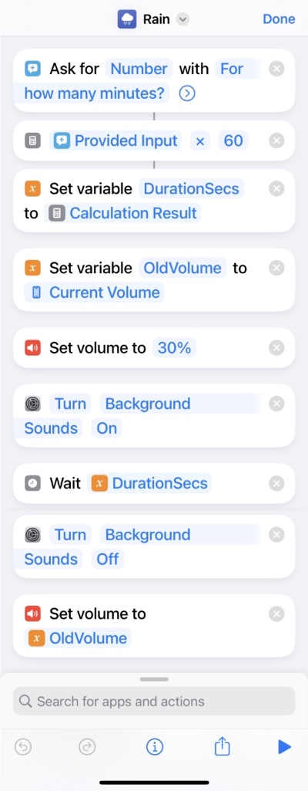

Фоновый шум
Оказалось, что уже несколько версий iOS умеет генерить разный фоновый шум:

Спрятано это все в Settings → Accessibility → Audio/Visual → Background Sounds.
Я по этому поводу запилил шорткат, который умеет включать этот шум на указанное время:

Включаю его перед сном или когда хочу чтобы ничего не отвлекало.
Вот он файликом.
Заодно выяснилось, что шорткаты в iOS не идеальны)